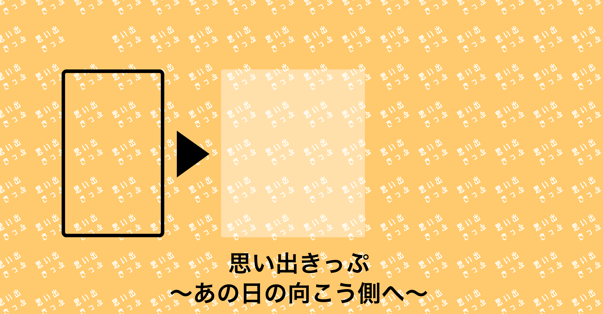
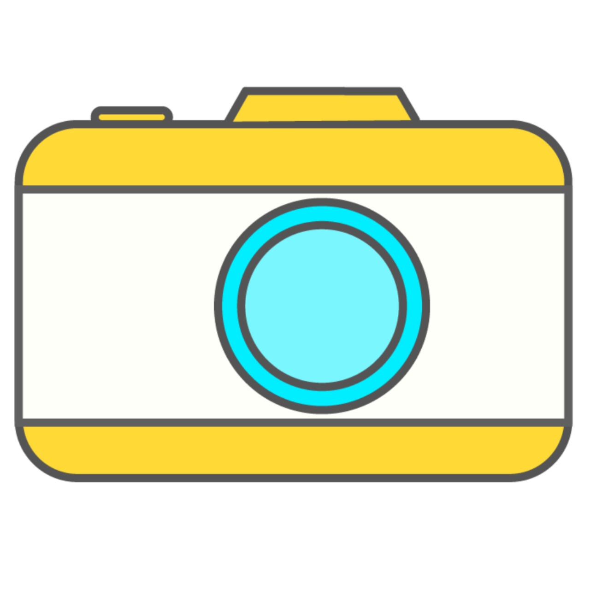
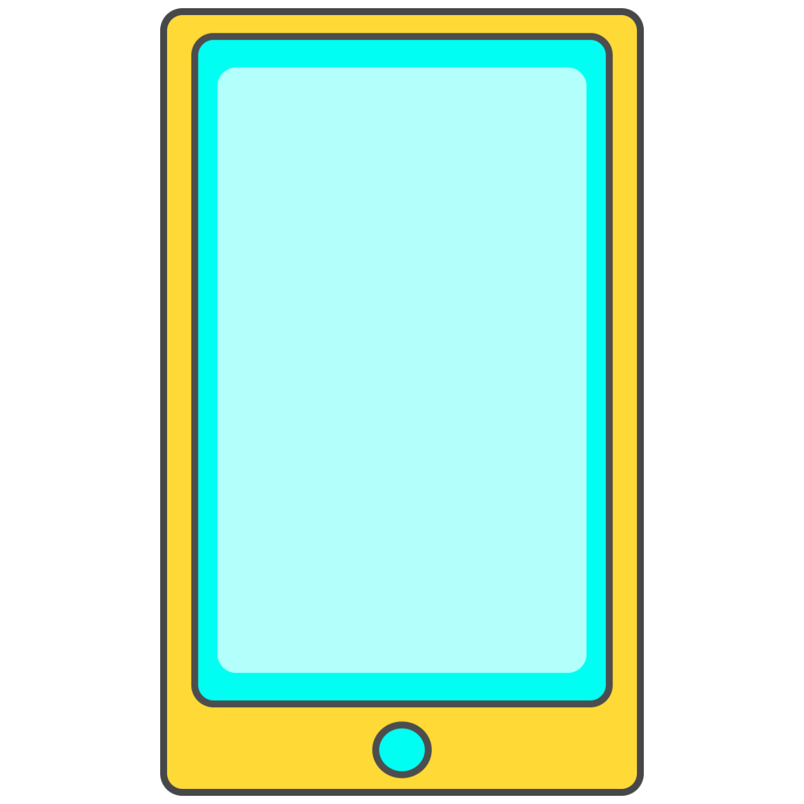

はじめに
現在、世の中には思い出を残す方法として写真の撮影を行ったり
訪れた場所の切符や入場チケット等を残す方法がありますが
写真は捨てにくかったりクラウドストレージ等に保存を行なっても
見返す機会が少ない事に気がつきました。
そこで私は、切符程度の小さなアナログの媒体に、画像や映像、音声等に
QRコードといったデジタルのデータを載せて引き出せるようにし
思い出きっぷという物を制作しました。

思い出きっぷとは
思い出きっぷは普通にアルバムを見るのとちがって
qrコードを開くまでのワクワク感を楽しんだり
アナログとデジタルの両方のメリットを活用する事ができます。
きっと思い出きっぷは新たな体験価値を生み出してくれるでしょう。
このwebサイトではそれらを体験したり
実際に切符を作成する事が可能です。
さぁ思い出きっぷと共に新たな創造を始めましょう。
